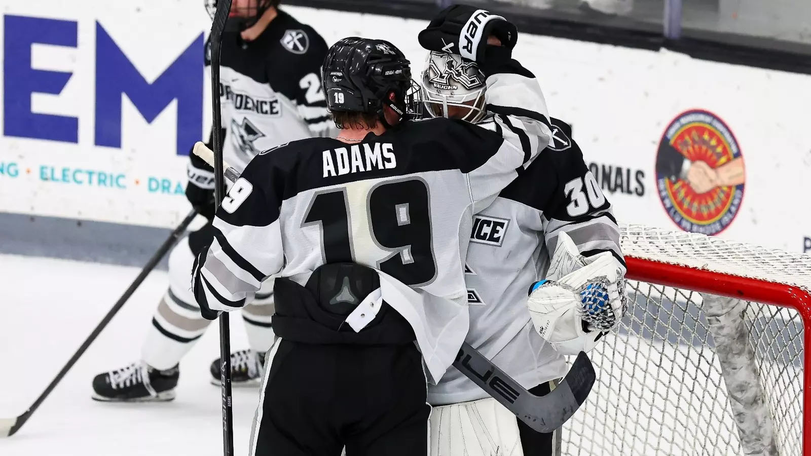

Find the right league for you!
Think about what skill level you are in order to correctly join the right league.
If you aren't confident in most of your skills for hockey, I'd recommend joining a beginner league. These leagues can help you develop skills in order to become better at the sport. Even if you think that these leagues might not be the competitive sport that you know as hockey, they are able to help you get into the sport in order to later join a better league.
If you feel confident about some of your skills but aren't completely fine with all skills, I'd recommend joining a more competitive recreational league. These leagues will help foster more of the skills that can't be easily learned in beginner leagues. For instance the ability to play with linemates in order to try to create plays together. Working with all other skaters on the ice is a skill that is very useful to any skater that hopes to grow into a great player one day.
If you are truly confident in your skills then you should join a more proffesional league that has schedules for teams and possibly even playoffs. These leagues will have many types of players which can help you develop your skills. These leagues will be hard but if you find your groove you will be able to skate with those players. Many parts of hockey once you have the skill is all about the mental part. Like how should I play the puck and should I pass here or shoot. With all of this you should be able to know what types of leagues you should research.